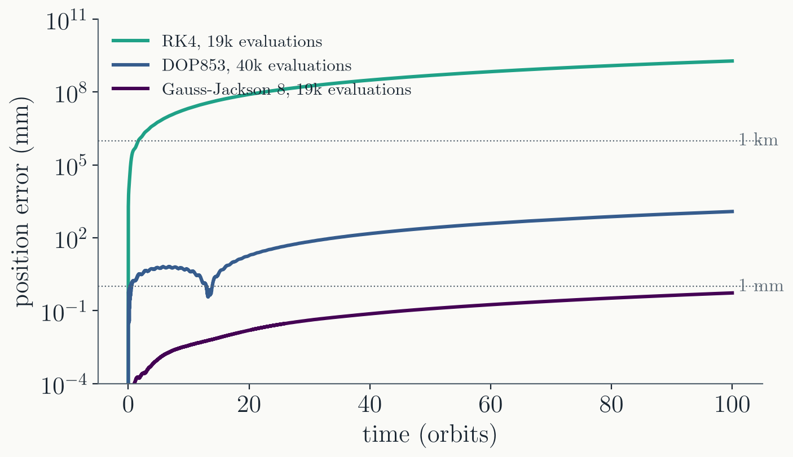
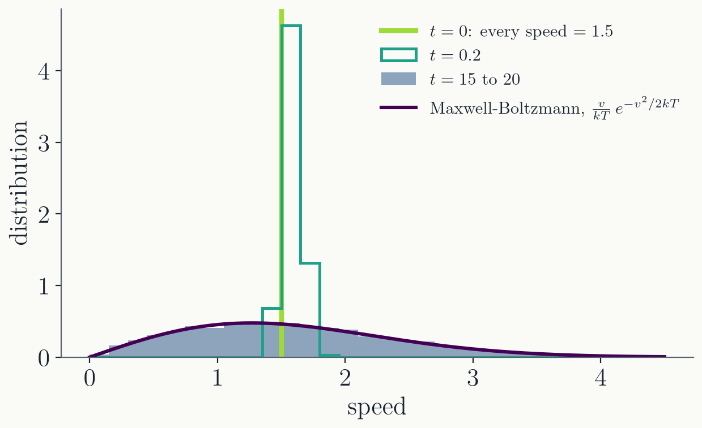
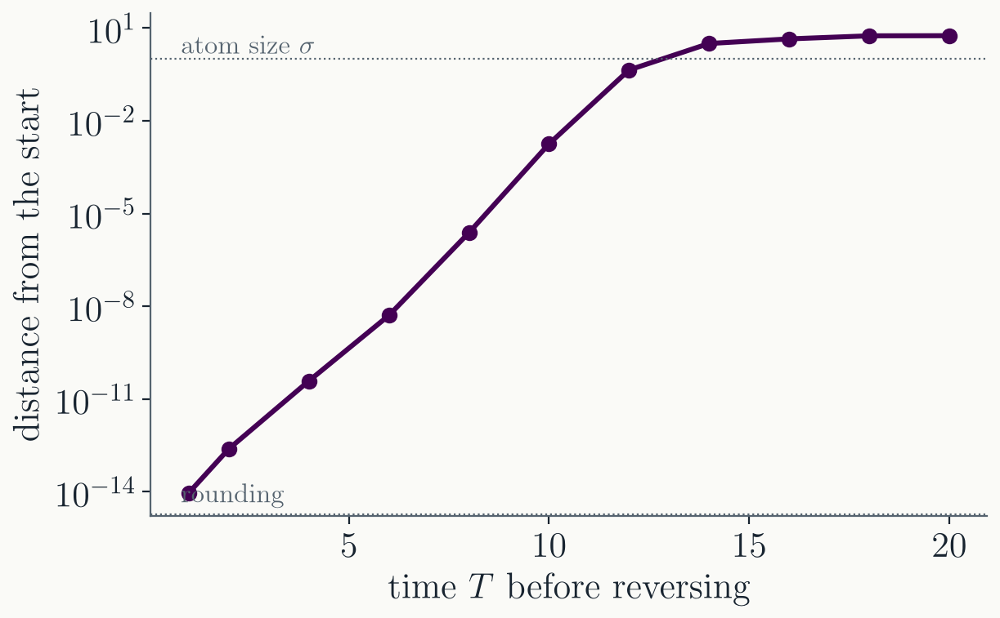
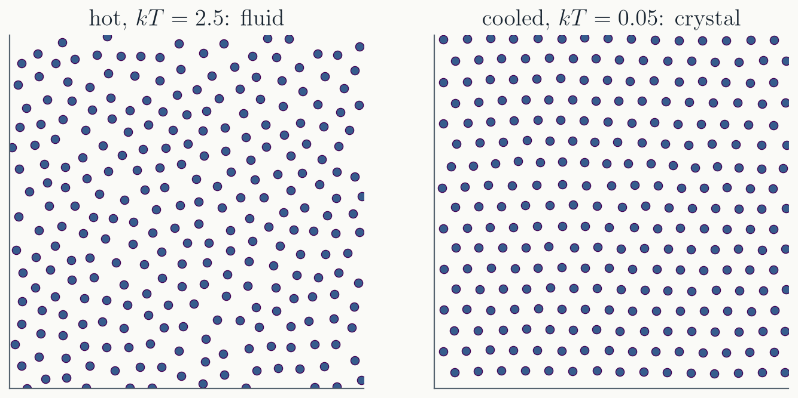
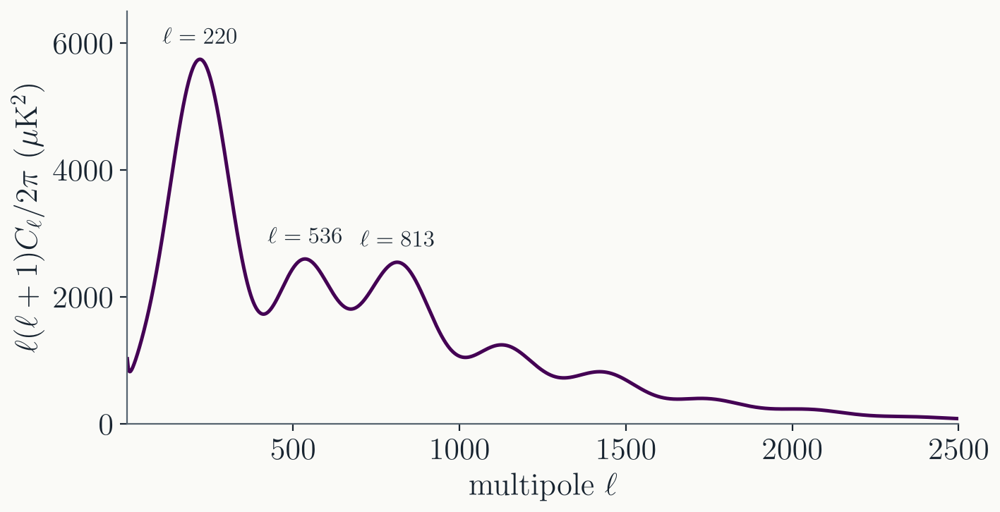

Runge-Kutta: easy to start, slow.
Multistep: fast.
"Unconditionally stable" here means no
growing parasitic roots at small $h$, not the stiff stability
of Lecture 10.
Their pick for orbits: Gauss-Jackson.
Gauss-Jackson
A multistep predictor-corrector method (Lecture 10), built for
second-order equations $\ddot{\mathbf{r}} = \mathbf{f}(t, \mathbf{r})$:
it integrates twice without converting to a first-order system.
Eighth order, fixed step, and about one or two
evaluations of the force per step.
Needs a start-up (a Runge-Kutta run for the
first points), like every multistep method.
Still used for satellite orbit propagation
(Berry & Healy 2004).
100 orbits, measured

A circular orbit 7000 km from Earth's center (period 97
minutes), error after 100 orbits:
RK4, 20k evaluations
1900 km
DOP853, 40k
1.2 m
DOP853, 97k
0.7 mm
Gauss-Jackson 8, 20k
0.5 mm
High order, one or two evaluations per step,
and a smooth periodic problem: the best case for a fixed-step
multistep method.
Part III · Molecular dynamics
Newton's equations for many atoms
Molecular dynamics
$N$ atoms, Newton's second law, and a
pair potential. For noble-gas atoms, Lennard-Jones:
Integrated with velocity Verlet (Lecture 10):
one force evaluation per step, and bounded energy error over
millions of steps.
The cost is in the forces: all pairs is
$O(N^2)$. Cutting the potential off at a few $\sigma$ and keeping
neighbor lists makes it $O(N)$.
Used for liquids, materials, proteins and drug
binding.
Collisions make Maxwell-Boltzmann

400 atoms, every one starting at the same speed, in random
directions.
Nothing statistical is put in: Newton's
equations and collisions produce the Maxwell-Boltzmann
distribution, at the temperature set by the energy.
Running the gas backwards

Run 100 atoms for a time $T$, reverse every velocity, run $T$
again. Leapfrog is exactly reversible (Lecture 10), so the gas
should return to where it started.
At $T = 1$ it does, to $10^{-14}$. But every
0.35 time units the miss grows by a factor $e$: rounding errors
are amplified by the chaos of the collisions.
By $T \approx 12$ the gas misses by half an
atom, and after that it keeps no memory of its start.
Cooling into a crystal

256 atoms, slowly cooled by rescaling their velocities every 50
steps.
The atoms find the triangular lattice by
themselves: freezing is in Newton's equations too.
Part IV · Cosmology
The universe as an ODE problem
The microwave background

Temperature fluctuations of about $10^{-5}$, left from when the
universe became transparent, 380,000 years after the big bang.
The peaks are sound waves in the early
plasma. Their positions and heights measure the contents of the
universe.
Why it is an ODE problem
On large scales the universe is homogeneous: the background
(expansion, density, temperature) depends on time alone.
The fluctuations are small, so their equations
are linear. Fourier transform in space: each wavenumber $k$
evolves on its own.
For each $k$, every unknown is a function of
one variable:
conformal time $\tau$, with $d\tau = dt / a(t)$.
A PDE in space and time becomes a set of ODEs in $\tau$, one set per $k$.
The ODEs
Background: the Friedmann equation
$\left(\frac{1}{a}\frac{da}{d\tau}\right)^2 = \frac{8\pi G}{3}\, a^2 \rho$,
for the expansion $a(\tau)$.
Recombination: an ODE for the
free-electron fraction $x_e(\tau)$ as protons and electrons form
hydrogen.
Perturbations, for each $k$:
density and velocity of dark matter and of baryons; the photon
and neutrino distributions, expanded in multipoles $\ell$; and
the metric potentials. For the photons,
$$\frac{dF_\ell}{d\tau} = \frac{k}{2\ell+1}\Big[\ell F_{\ell-1} - (\ell+1)F_{\ell+1}\Big] - a n_e \sigma_T F_\ell \quad (\ell \ge 3)$$
Stiff: early on, the scattering rate
$a n_e \sigma_T$ is enormous compared with the expansion rate.
Codes use a tight-coupling approximation there, or an implicit
solver.